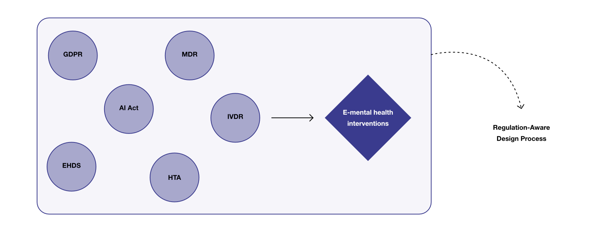
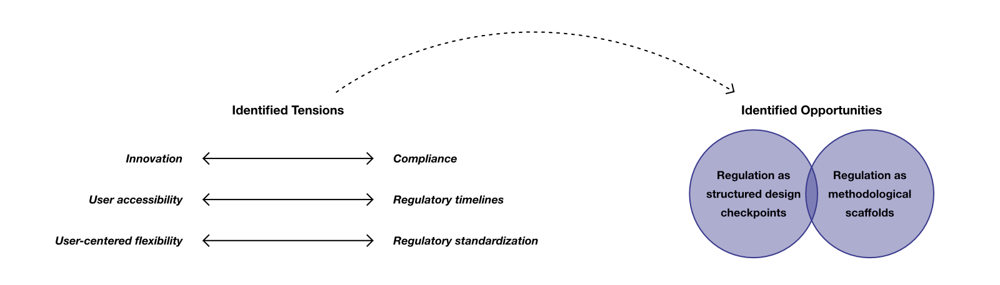
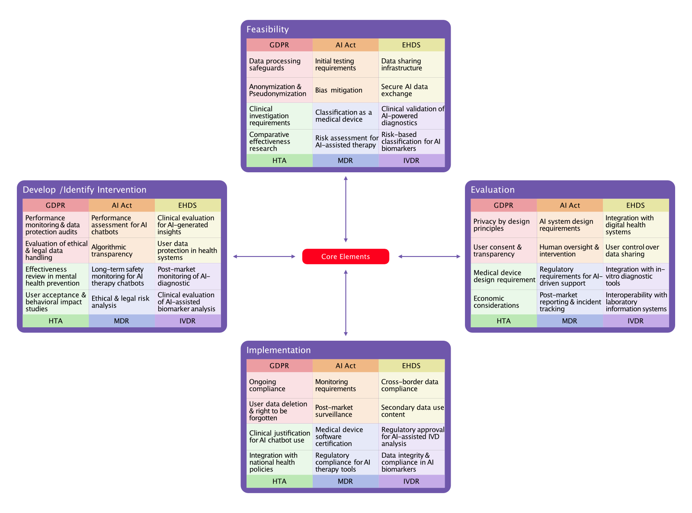

Bridging Innovation and Regulation: A Regulatory Mapping for Designing Digital Mental Health Interventions
This project explores how the design process for digital mental health interventions can be advanced by incorporating regulatory considerations into the development process. To address the importance and complexity of navigating evolving EU regulations, the project applies a mapping approach to make regulatory requirements more interpretable and actionable. The exploratory outcomes provide design implications, and the reflections suggest directions for further research.
How might we advance design process to be more responsible and implementable?
The development of digital mental health interventions, such as mobile apps, web platforms, and AI chatbots, is increasingly shaped by complex and rapidly evolving EU regulations. Designers and developers must navigate overlapping requirements across GDPR, the AI Act, EHDS, HTA, MDR, and IVDR, yet limited guidance exists on how these regulations practically influence design and development. This project investigates how regulatory considerations can be integrated into the early stages of designing digital mental health interventions. The goal was to develop a regulatory mapping approach that makes the complex regulatory landscape more interpretable and actionable for design and innovation processes.

Developing Regulatory Mapping Approach.
A structured two-phase research process was used. Specifically, this study incorporated co-piloting with a Large Language Model (LLM). As this was an exploratory project, expert validation was not conducted; therefore, future research should further examine the mapping’s validity and usability.

From Tensions Toward Opportunities.
Through the mapping activity, key insights were identified. The tensions highlight what must be addressed in future regulation-aware design processes. Although these tensions present challenges, regulation also emerged as an opportunity by providing structured design checkpoints and methodological scaffolds that help designers select appropriate methods and ensure responsible, implementable outcomes throughout the process. These tension–opportunity insights demonstrate the potential for regulatory constraints to guide responsible innovation rather than hinder it.

A Pilot Mapping Result and its Implications.
Using the Medical Research Council’s framework for developing and evaluating complex interventions (Skivington et al., 2024), the key regulations were translated into an interpretable guideline. Although this exploratory mapping provides a simplified view of the regulatory landscape, embedding it into the design process can support more implementable and responsible design practice. In addition, reframing regulatory compliance as a guiding design tool enables designers to leverage regulatory insights to support innovation and informed decision-making throughout the design process.
